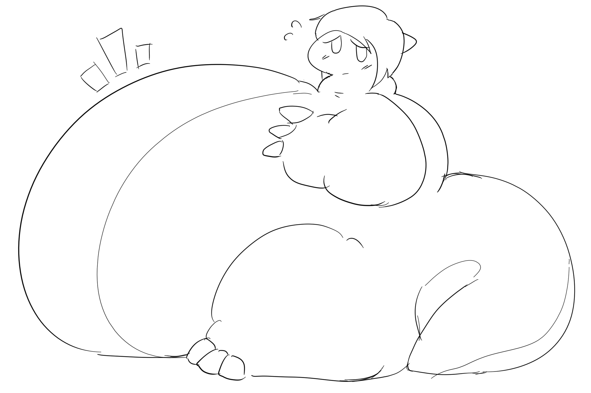
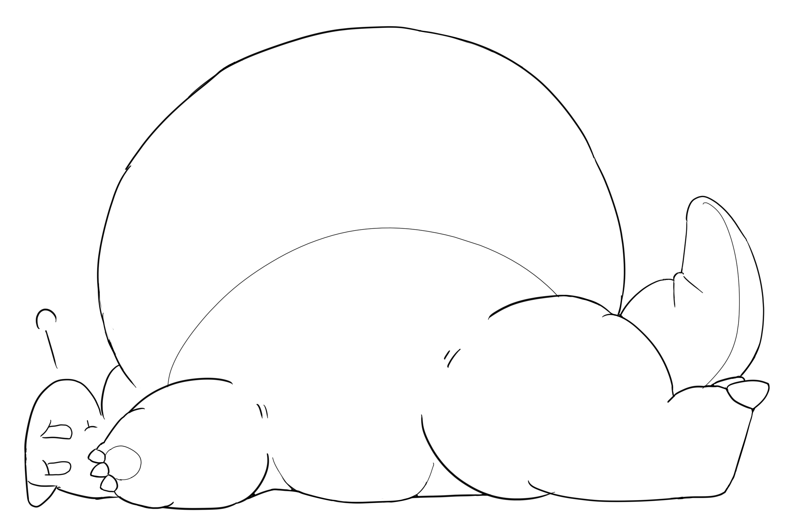
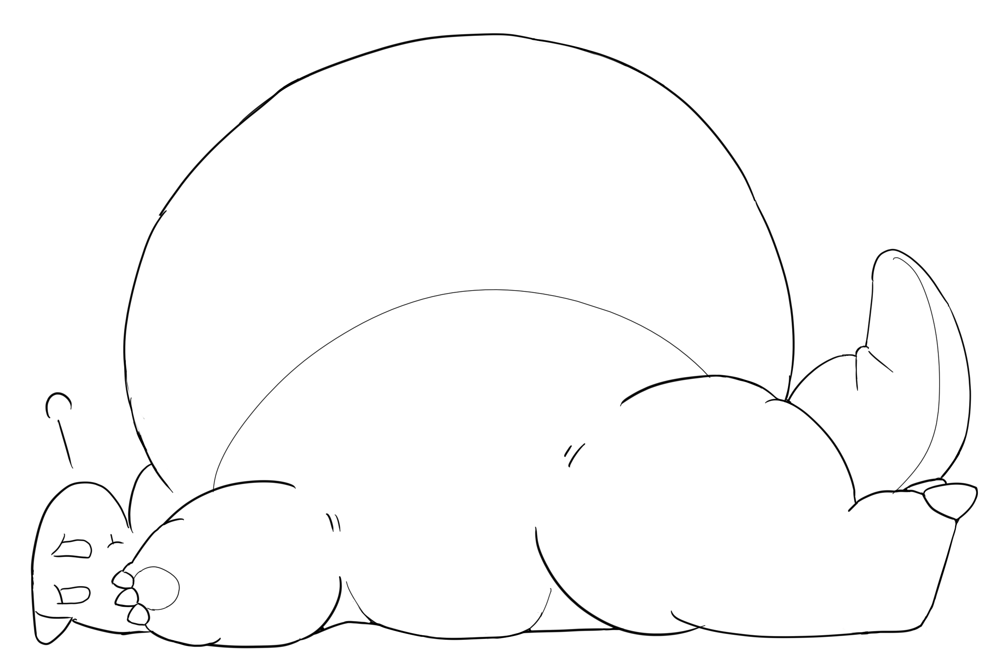
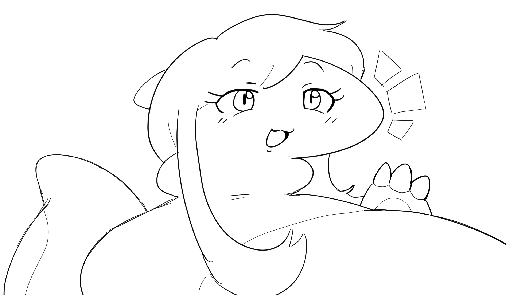
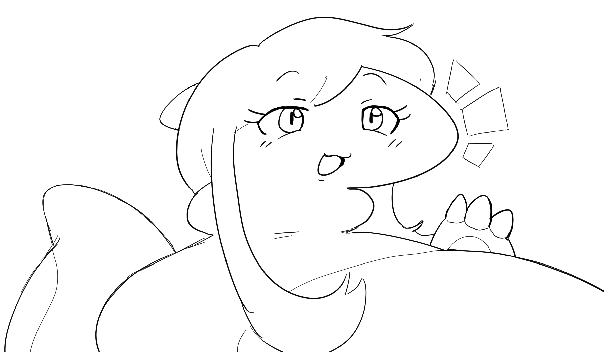
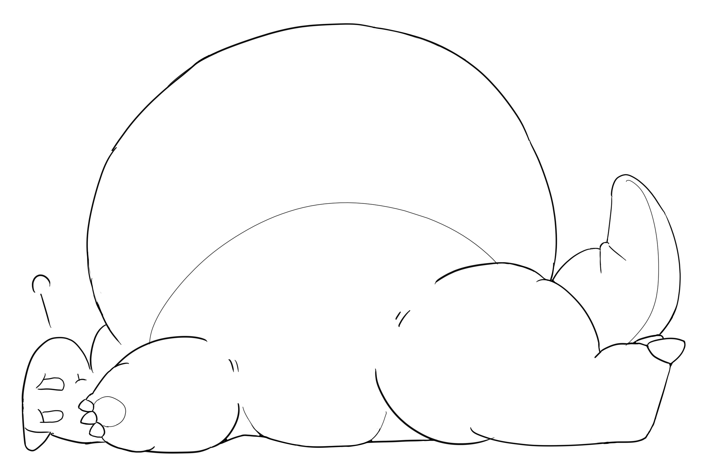
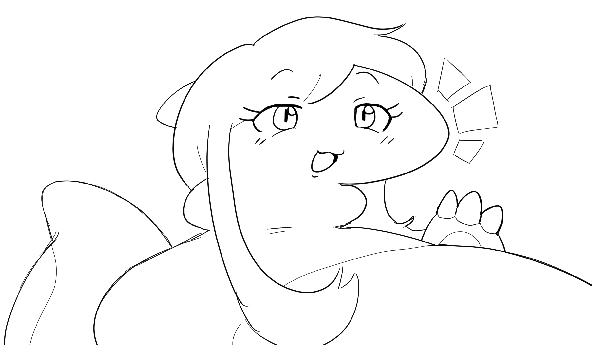

This is my comically fat dragon character named Futodoshi (フトドシ). She runs a small restaurant with her crew, and is often strained to make ends meet.
Her design is sort of fluid. She is not supposed to be particularly sexy, just big.
I took inspiration from this artist. I like their style a lot.

 



 


